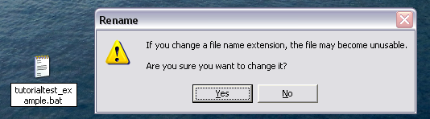

Now that you've been able to learn about HERMES through a general tutorial, you can now practice using HERMES with a tiny model!
This model was heavily based off of the "tiny_town" model regularly used by the development team to test data and code changes. The main changes to this model include making a supply chain of US-based locations (instead of a hodgepodge of domestic & international locations). If the model runs as intended (i.e., with no significant errors), it will take less than a minute to run.
This tutorial example page can be read in either one of two ways:
From the SVN repository, update your repository to the latest version of HERMES.
To reach the tutorial model data files in your HERMES repository, first click on the Data folder, then click on the tutorial_test folder.
The screenshot below shows the general files that should be present in your tutorial_test file.
Under the tutorial_test folder, you will see the following general and model-specific files (unless linked otherwise):
| File Name in tutorial_test | Function in HERMES |
|---|---|
| Tutorial_Calendar_Baseline.csv | Calendar File |
| Tutorial_Demand.csv | Population Demand File |
| tutorial_input.kvp | Input KVP File |
| Tutorial_OVW_test.csv | Open Vial Waste File |
| TutorialCosts.csv | Model Costs File ("Price (Costs) File") |
| TutorialRoutes_new.csv | Transport Routes File ("Routes File") |
| TutorialStoreInfo_refrigerators.csv | Location-Specific Storage File ("Stores File") |
| UnifiedPeopleTypeInfo.csv | Unified People Types File |
| UnifiedStorageTypeInfo.csv | General Storage Device File |
| UnifiedTruckCapacityInfo.csv | General Transport Vehicle File |
| tutorial_custom_out.csv | Custom Output File |
Between the HERMES revisions describing the original multi-page tutorial and now, there has been one additional file added to the tiny tutorial. It is the "Custom Out" sheet, typically used to display the results of HERMES into a single output worksheet. This document will not have to be modified by a new user to HERMES.
As mentioned previously, the Input KVP file is the type of file that "ties" together all of the data input files, so that the model knows what files to read exactly.
The input file used for this particular scenario is:
# # This is a tiny tutorial test input # rundays = 336 model = 'model_generic' monitor = 1000000,1030000,1030300,1030301,1030302,1030303 monvax = 'all' burnindays = 28 storesfile = 'TutorialStoreInfo_refrigerators.csv' routesfile = 'TutorialRoutes_new.csv' demandfile = 'Tutorial_Demand.csv' outputfile = 'tutorial_out' calendarfile = 'Tutorial_Calendar_Baseline.csv' levellist = 'Central','State','County','City' cliniclevellist = 'City' calendarcycle = 672 initialovw = 'Tutorial_OVW_test.csv' #seed = 1234 pricetable = 'TutorialCosts.csv' customoutput = 'tutorial_custom_out.csv' eventlog = 'Tutorial_EventLog' #eventloglist = 'pickup','delivery' eventlogregex = 'California'
On its face, this input KVP file looks like previous iterations of its file type, as mentioned in the tutorial. However, there are some fundamental differences in this input file. These are:
As previously mentioned, the batch file is an executable program on a Windows operating system which can hold a series of commands that run if the icon is clicked.
To create a batch file:

The graphic above shows steps #2 and #3 on creating a batch file (shown above).
The batch file used to run the tutorial model is:
cd tutorial_output set path=C:\python27;%path% set hermes_data_path=.;"C:\Documents and Settings\leestudent\Desktop\HERMES2\data\tutorial_test";"C:\Documents and Settings\leestudent\Desktop\HERMES2\master_data\unified"; "C:\Documents and Settings\leestudent\Desktop\HERMES2\main.py" tutorial_input.kvp --out=Tutorial_test >> tutorial_error.txt 2>&1
In the above tutorial model batch file, we can see that there is a line marked, cd tutorial_output. This line indicates that the output will be written into a folder (existing in the same folder as the batch file), where we can subsequently check our results. (If you're confused, look at the graphic below for appropriate batch file / output file placement.)
Once the batch file has been clicked upon, the model should take no more than a minute to run.
Once the model has nearly completed running, assuming that nothing in the input files (data or KVP) has been changed, the following stockplots should appear:
Each one of these graphs indicate the vial counts at individual warehouses. There are two plots that come out of this model: the histogram of vial counts at warehouses, and vial counts versus time for warehouses.
The stockplot on the left, "Histogram of vial counts for warehouses, run #0", indicates the number of days (y-axis) in which a certain vial count (x-axis) was denoted at a particular location (title of the stockplot). This histogram does not plot the relationship between vial counts at various points in time, but it gives a general idea of the number of days a range of certain vial counts was noted. A general idea of the number of stockouts can be observed, if one looks at the number of days at which the vial count is 0 ("0" on the x-axis).
The stockplot on the right, "Vial counts vs. time for warehouses, run #0", indicates the vial counts at a particular warehouse (y-axis) throughout the time period that the model runs in (x-axis). This stockplot gives a sense of the vial counts per time, and can therefore show when shipments were implemented in the model, as these times would be periods where the location quickly runs out of vaccines. Subsequent areas with high vial counts can display when new shipments of vaccines came in the model. Taken together, reading these data trends can show when shipments and overstocks occured in the model.
If you need a refresher on how to read stockplots, an example of where stockplots have been used before can be found here.
One these stockplots are closed, the model finishes running. Going into the tutorial_ouput folder previously created, we see the following files:
As you can see, the output files that are available are:
The first draft ("beta test") of this tutorial was constructed from April 4-12, 2012.
The tutorial model created as a hands-on example to HERMES was created from November 19-20, 2012.
This tutorial will be updated accordingly as new developments come into the picture.
If you have any other questions that haven't been approached in this document, feel free to email the tutorial webmaster here.